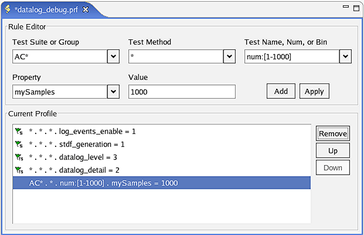
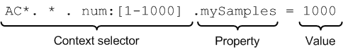

Profile Editor
With the Profile Editor, you can create your own custom data logging profiles or modify existing profiles.

The Current Profile section at the bottom of the window shows the content of the data logging profile being edited. Every line represents a property rule.
In the Rule Editor section at the top of the window, you can define new property rules or change existing ones.
Tool tips are available for all list boxes by simply pointing the mouse pointer at the list without clicking.
For every list box, you can open a content assistant by pressing the Ctrl and Space keys. The content assistant displays all values that have already been defined.
Example
In the figure above, the upper half of the window and the highlighted line in the lower part display the same rule. A property rule consists of the following parts:
- Context selector
- Property
- Value
For example:

This rule has the following meaning:
For all AC tests with the test number range [1-1000], the property mySamples has the value of 1000.
If a rule displays a flag symbol at the left, this rule affects flags. The type of the affected flag is also displayed:
- TS: test suite flag
- S: system flag
- U: user flag
- TF: testflow flag
If no flag symbol is displayed, no flags are affected. Rules without flags contain user defined properties.
Functional changes
- Introduced before SmarTest 6.3.2